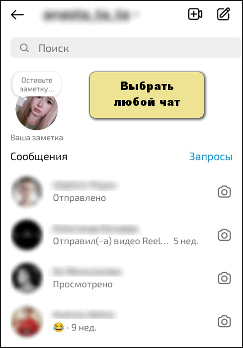
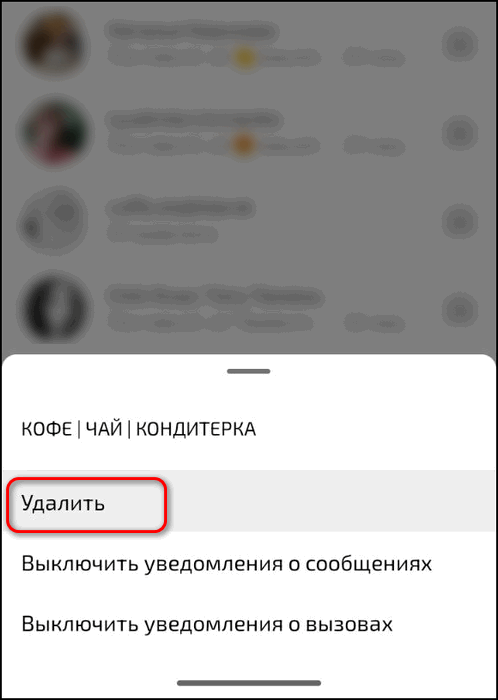
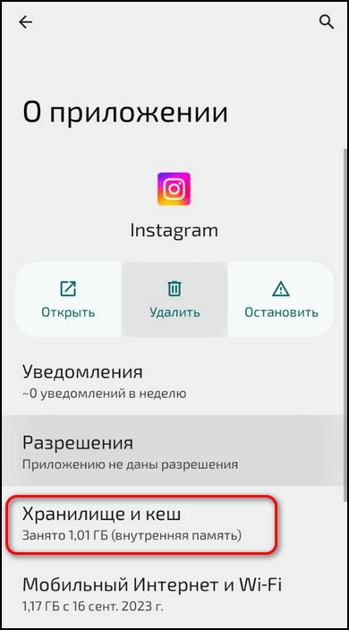
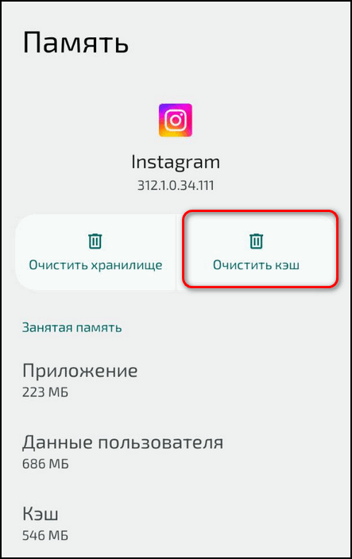
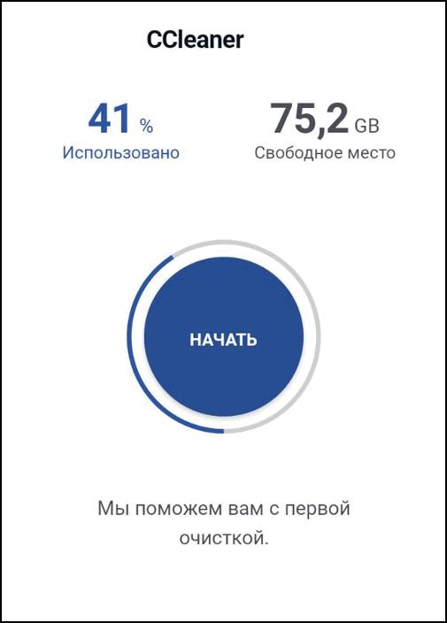
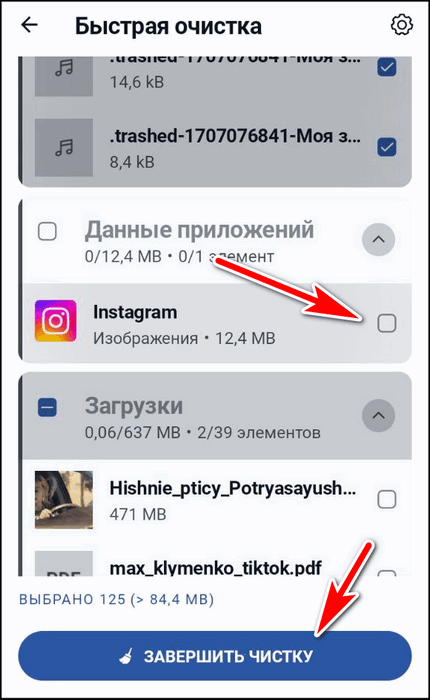
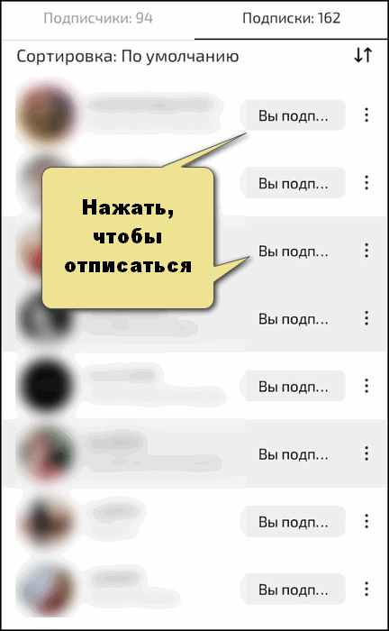

Очистить кэш в Инстаграме: в приложении и на смартфоне

Удалить кэш в Инстаграме* пользователь сможет несколькими способами: через настройки на смартфоне, воспользовавшись дополнительным программным обеспечением.
Очистка кэша в Инстаграме* через приложение
В самом приложении такой функции как «Удалить кэш» нет. Временные данные хранятся до тех пор, пока пользователь не удалит их с помощью раздела «Настройки» на своем телефоне или программ для очистки. Но можно почистить информацию в Директе, убрать историю поиска:
- Зайти в приложение – перейти в Директ.

- Выбрать диалоги, которые уже не нужны или не используются.

- Зажать пальцем по чату – выбрать в появившемся списке: «Удалить».
Также будут стерты все отправленные фотографии и видео. Поэтому, если участник чата дорожит переданным контентом, ему нужно заранее побеспокоиться о том, чтобы сохранить медиа на свой телефон. На Айфоне и Андроиде есть еще один вариант, как убрать кэш – удалить приложение и установить заново. С iOS:
- Зайти в Настройки – Основное.
- Хранилище iPhone – найти в списке приложений Instagram*.
- Удалить приложение.
Теперь все данные будут стерты и при следующей попытке входа пользователю придется вводить логин и пароль.
Очистить хранилище
Кэш почистить с помощью Андроида проще всего. В устройствах под управлением этой операционной системы есть отдельная функция под очистку необязательных данных. Например, ранее загруженных масок, чужих Историй и копий профилей, которые были посещены. Убрать лишний кэш из хранилища:
- Зайти в Настройки телефона – Приложения.

- Найти «Инстаграм*» - появится дополнительная информация.
- Хранилище и кэш – Очистить.

- Подождать, пока будет высчитан новый размер приложения.
Такой вариант доступен только на Андроиде, как встроенная функция. И при входе в приложение не нужно заново авторизовываться, потому что стираются только ненужные файлы.
Удалить данные с дополнительным ПО
Удалить кэш в Инстаграме* на Андроиде можно еще одним способом – установить приложение для очистки системы. Обычно такие утилиты поддерживают дополнительные функции, как ускорение запуска, отключение ненужного ПО и постоянный мониторинг за приложениями, которые реже всего запускают. Лидирует среди них Ccleaner, направленный на разные платформы: от компьютеров до смартфонов. Очистить данные из Инстаграма*:
- Скачать и установить Ccleaner из Play Market.

- Открыть – предоставить доступ к управлению файлами.
- Выбрать: «Старт очистки» - в списке появится: «Инстаграм*».

- Указать его как область очистки – подтвердить удаление.
Кроме этого, запуская очистку на смартфоне, пользователь убирает все ненужные файлы и тем самым освобождает телефон.
Приложение предложит перевести некоторые утилиты в спящий режим, постоянно будет активно, чтобы проверять смартфон на наличие «мусора».Но постоянная работа такого программного обеспечения повлияет на объем батареи: устройство будет защищено, но потребуется регулярная подзарядка.
Убрать данные в своем профиле Инстаграма*
Еще один способ, как ускорить загрузку профиля – удалить свои данные из Инстаграма*. Есть два варианта, как это сделать: через настройки смартфона выбрать пункт «Удалить данные» или просто убрать информацию о себе на своей странице. В первом случае будут удалены ненужные сведения и освободиться пространство на телефоне, во втором – пользователь обезопасит личные данные. Убрать сведения о себе:
- Зайти в социальную сеть – перейти в свой профиль.
- Нажать сверху: «Редактировать» - удалить описание, номер телефона или адрес электронной почты, если были прикреплены.
- Перейти в «Настройки» - Конфиденциальность.
- Закрытый профиль – передвинуть ползунок.
Теперь данные владельца скрыты от посетителей страницы, так как он перешел обратно на личный. Аккаунт в любой момент можно заново сделать общедоступным: открыть или установить статус «Автор» или «Бизнес».
Удаляем ненужные подписки
Удаление подписок и ненужных или даже вредных подписчиков дополнительно влияют на скорость загрузки страницы. Отписавшись от многих блогеров, Лента новостей не будет такой захламленной и среди перечня незнакомых людей проще находить публикации друзей и знакомых. Как убрать:
- Зайти в Инстаграм* - перейти в список «Подписки».
- Нажать напротив никнейма «Отписаться».

С подписчиками:
- Перейти в раздел с фанатами.
- Напротив никнейма нажать «Убрать».
Чистка страницы нужна не только блогерам: подписчики, не входящие в целевую аудиторию, мешают статистике и продвижению аккаунта. Дополнительный способ – воспользоваться приложениями или сервисами для очистки аккаунта. Например, Followers-Unfollowers из Play Market. Утилита показывает, кто подписан взаимно, отписчиков, удаляет пользователей по критериям. Как воспользоваться для чистки страницы в Инстаграме*:
- Зайти в Play Market – установить приложение.
- Подключиться к своему профилю – указать, что нужно отписаться.
- Выбрать список пользователей, которых нужно убрать из друзей. Например, только тех, кто не подписан взаимно.
- Подождать, пока будут удалены по критериям.
Таким образом пользователь исключает тех, кто не планирует подписываться взаимно или удалил из товарищей.
Недоступен вход в приложение: как вернуть
После очистки данных и кэша возможна ситуация, когда невозможно войти в учетную запись. Причиной может быть:
- нужно обновить приложение. Инстаграм* работал, пока были закешированы старые данные.
- неправильный логин или пароль;
- нужно переустановить приложение, потому что произошла ошибка.
Проблемы с кэшем в основном решаемы через переустановку приложения. Пользователю нужно убрать текущую версию и установить последнюю, из Play Market или AppStore. Если же неправильно введен логин или пароль – на экране появится соответствующее уведомление и варианты восстановления. Пользователю будет предложено вернуть управление аккаунтом по номеру телефона или адресу электронной почты. Второй вариант предпочтительней тем, что не требует стабильного подключения к связи, а письмо приходит в течение 15 минут.